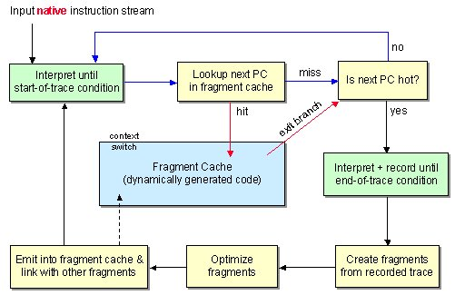
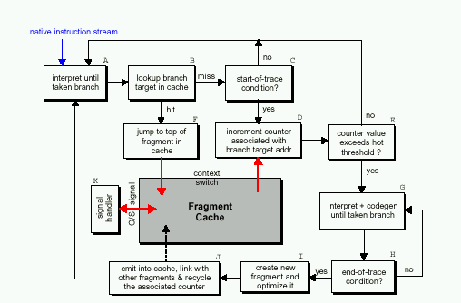
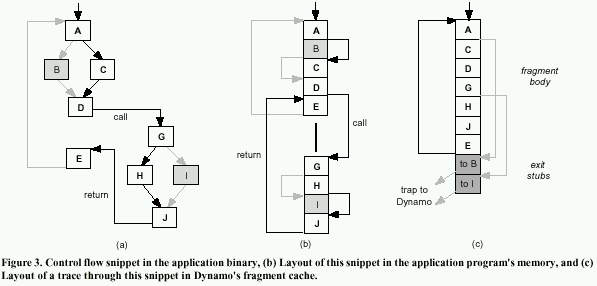

Aim to summarise the state of dynamic optimisation, since there now seem to be lots of projects which are reusing the same few basic techniques, with various degrees of success and/or failure. This is a precursor to trying to find a universally unfollowed theme to continue on myself.
Eek! Dynamo has come a hell of a long way. Check that shit out!


No proper algorithm given, it seems...
Executes code one basic block at a time. Uses a "lightweight disassembler" to identify control-flow instructions. These are then copied to a basic block cache, and modified to transfer control back to the dispatcher. Additional information about the basic block is retained, eg what type of control transfer instruction it originally ended with, which is used to build "hot paths".
These basic blocks are then used to gather frequency data equivalent to the original basic blocks, by the way they return to the dispatcher. If some threshold is passed for a single block, a trace is started, presumably linking together a particular path through the code. Some stuff I don't understand.
"The main dispatch loop of a dynamic translation simulator checks to see if the translation for the current simulated PC is present in the translation cache. If the translation is present, it is executed, otherwise the translator is called to generate it. Having translations constantly return to the main dispatch loop is the performance concern addressed by chaining."
Looks like it pretty much uses the "JIT" approach. When a jsr is encountered, it compiles the target routine and modifies the "jsr handler" (?) to point directly to the target routine. Compilation continues for other code which can be reached from the leader instruction, but not through jsrs. Does that mean it does code walking is done?
"Syn68k does not attempt to generate native code for a basic block until that block (or a nearby one) has been executed 50 times." Uses a hash table to maintain basic block information.
Called various things by various projects, this is perhaps the most important technique in dynamic optimisation to date. From program-transformation.org:
The idea is to position the basic blocks of a procedure in such a way that most executions of the code will fall through branches (forward branches are typically predicted to not be taken). This minimizes the cost of branch mispredictions, and keeps commonly executed code together. The latter will have the effect of making best use of the instruction cache, and minimizing cache collisions.
Such optimal positioning of basic blocks can be very effective at speeding up programs, especially when the information about branch frequencies is obtained dynamically (i.e. as the program is running).

Practiced by:
Practiced by:
Something to do with symbolic arithmetic on address calculations. Practiced by:
Practiced by:
Practiced by:
When it can be proved that a load from a particular address directly follows a store from the same address, the load can be eliminated. Practiced by:
Moves loads as early as possible. If at least one store is present before the value is used, a load-verify instruction is inserted & if the value loaded is different a "load verify trap" is taken (and presumably, the intervening instructions are invalidated). Practiced by:
Practiced by:
Practiced by:
Specific to Daisy's VLIW-ness, I think. Practiced by:
Practiced by:
Practiced by:
Practiced by:
Practiced by:
Practiced by:
Practiced by:
The work on this doesn't seem too complete. Perhaps there's more.
Uses a large fixed-size cache. No info on replacement policy.
Uses a pre-emptive flushing mechanism of the whole of its fragment cache. Rather than extending the cache or flushing it when it becomes full, it is flushed when a sharp increase in fragment creation rate is noticed. This means that phased behaviour of code, eg change in working set after certain periods of time, is handled well.
Seems to work well for them in practice.
Fixed size cache? Fully flushed on self-modifying code.
Checksums blocks to avoid unnecesary recompilation. Doesn't seem to be any other information.
Uses a private basic block cache per thread (64k) and a shared path cache. path cache size chosen between 512kb-5Mb depending on executable size. Mojo makes programs slower.
Maintains 16 or so "traces" at any given time. Traces are removed "as computation evolves", so perhaps LRU or something?
Alto appears to be a load-time optimizer for the Alpha processor.
BOA is Crusoe for PowerPC. That is, it's a VLIW processor which exposes its gritty internals to a virtual machine monitor, which hosts all code above it as if it were running on a native PowerPC. It has special features to support binary translation. Inspired by work (also at IBM) on Daisy, also FX!32.
Abstract:
C-Mix is a tool based on state-of-the-art technology that solves the dilemma of whether to write easy-to-understand but slow programs or efficient but incomprehensible program. C-Mix allows you to get the best of both worlds: you write the easy-to-understand programs, and C-Mix turns them into equivalent, efficient ones. As C-Mix is fully automatic, this allows for faster and more reliable maintenance of software systems: system programmers need not spend hours on figuring out and altering the complicated, efficient code.
C-Mix is a program specializer: Given a program written in C for solving a general problem, C-Mix generates faster programs that solve more specific instances of the problem. Application areas include model simulators, hardware verification toos, scientific numerical calculations, ray tracers, interpreters for programming languges (Java bytecode interpreters, task-specific interpreters), pattern matchers and operating system routines.
C-Mix currently runs on Unix systems supporting the GNU C compiler, and treats programs strictly conforming to the ISO C standard. Future releases of C-Mix are intended to run on a variety of platforms.
By "fully automatic" they don't really mean fully automatic - C-Mix doesn't figure out what to specialise itself I don't think.
Transmeta's Crusoe processor is designed with dynamic code translation in mind. It includes hardware support for precise exceptions and speculation in rescheduled code (shadow registers), optimization of memory operations (alias hardware), and self-modifying code (a "translated" bit in the MMU). It works on non-native binaries, to transparently execute IA-32 code on its own VLIW processor core.
Crusoe's method of operation is otherwise similar to that used by various emulation systems. It starts out emulating code, then for frequently executed sections it does a 'rough' translation to its own native code. These translations are cached and further optimised over time the more they are executed. By this method the designers claim that performance comparable to a modern hardware IA-32 implementation is obtained. (Hint: not faster).
Daisy is a dynamic binary translator from PowerPC code to a new (PowerPC-based) VLIW target. The VLIWs are unusual in that they are trees (I don't entirely understand how they work). This might be the same as what I was proposing for my research, I'm not sure. Seems like a bit of a toy, but is a precursor to BOA.
Deco is a proof-of-concept dynamic optimisation system. Abstract:
This thesis describes the design of a software system capable of automatically performing code optimizations at run-time. Rather than attempting to run all optimizations statically, a compiler produces an executable capable of monitoring its own run-time behavior and performing on-the-fly optimizations which take advantage of current execution patterns. This technique, which we call dynamic optimization, potentially adds a high degree of adaptability to code optimization, postponing optimization decisions until the exact nature of the input set or program phase is known, and allowing these decisions to chnage as program behavior changes. The goal of this thesis is to demonstrate that dynamic optimiaztion is both feasible and profitable.
Also ripped from the dissertation describing Deco:
Dixie is a RISC architecture, meant as a target for binary translation work. Also, abstract:
Dixie is a toolset that enables computer architecture researchers to instrument and monitor all aspects of certain binary when run on its native environment. Dixie is even able to provide instructions on the "wrong path" of a program. Moreover, Dixie has cross-platform capabilities, allowing a researcher to trace a binary specified in ISA 'a' on a workstation with a different ISA 'B'. Not only that, but through its emulation capabilities, Dixie enables researchers to explore extensions to current ISAs and even to design, emulate and evaluate a completely new ISA.
Dixie is used as an intermediate language in binary translation. Dixie ate my homework.
Dynamite is the product of Transitive Technologies, a spin-off from Manchester University. They have a M-to-N dynarec, but have yet to impress the world at large from what I can tell, i.e. me. They have Powerpoint slides on their web site.
Embra is a dynarec, with only a 3-9 times slowdown behind native code (which is pretty good as these things go). They do full-machine simulation, but it doesn't look like they attempted any hardcore optimisation. They do "chaining", which is like ARMphetamine's xjmp inst.
Interesting features re: specific hacks for translating m68k to x86, such as postincrement or whatever being turned into relative offsets. Not really relevent here though.
FreePort Express is (was) a static translator, capable of translating MIPS binaries to Alpha systems. It presumably must have needed some knowledge of the compiler used to generate MIPS code, and failed on some (system level or architecture-dependent) input.
HCO (the system described in the paper "Hot Cold Optimization of Large Windows/NT Applications") splits functions into two versions, one "hot" and one "cold". The hot version contains a compacted version of the common case, hoping to ensure that all code bought into the instruction cache is executed. In addition to the "cold" version of the code, fix-up stubs are created to restore the machine state in the cases the "hot" code is invalid.
HCO provides a "reduction in path length" of 3-8%, though this doesn't seem to be interpreted as speed-up in the paper for some reason (not read too carefully mind).
HP Dynamo is a software-based dynamic optimiser for PA-RISC/HPUX. It is capable of increasing the speed of +O2 compiled executables to that comparable to their +O4 counterparts. +O4 executables can also receive a speed boost. Dynamo is regarded as the leader in the field, and has progressed a lot so that there are now versions for ARM, etc. which can be used in embedded applications.
Apple's environment for running Mac software on Unix. Employed some code translation, apparently.
MAJC is a VLIW chip with some features to enable code translation (ie, from Java bytecodes). Mostly vapourware, though they do have a picture of a chip on their website. Amazing what you can do with Photoshop.
Mojo is the Microsoft Research take on Dynamo. They aim for a more difficult problem, by tackling x86 code of the spaghetti GUI variety, ie their own dog food. Additional complexity of multi-threading. This hasn't worked too well for them so far, most programs slow down in fact.
Offline (but post-compile) optimisation of Alpha/NT executables. Results claimed are very good, apparently up to 33% improvement. Spike is good for call-intensive rather than loop-intensive applications. Traditional compilers are more suited to optimising the latter.
Unpublished work. Dynamic optimisation system with some hardware support (hardware based sampler, apparently nothing not included in "stock hardware/stock OS" though). Good results.
Creates multiple "traces", which may be up to 2000 instructions long. They claim this is long enough to insert pre-fetch instructions.